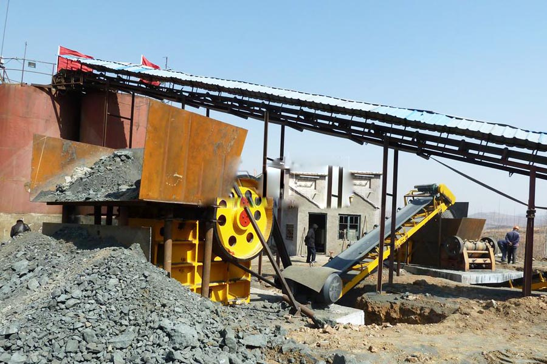

Construction waste crushing production line

Mobile construction waste crushing station for urban construction waste crushing.
coal crusher for sale
coal crusher for sale. CAG provide you with the price of coal crusher manufacturers, coal crusher is my business's flagship product, with our wealth of experience and quality service to provide you with preferential price of coal crusher. Equipment warranty for one year, timely delivery, quality Three Guarantees. Choose coal crusher.
Gangue crusher mobile crusher blending coal crusher equipment, CAG Machinery Manufacturing Co., Ltd. The main products are: coal gangue crusher, mobile crusher, coal crusher, roll crusher, coal machine, blending equipment.

Coal mine crushing production line
CAG Machinery (Coal mine crushing production line) in mineral processing aspects widely used, many customers get more benefits, CAG product also mainly for minerals, rock crusher, mineral grinding, sand stone and mineral processing and other fields. We provide Coal mine crushing production line technical guidance, based on your specific needs, for your rational design of production lines.
Because the tariff is low, you can (Coal mine crushing production line) to save a lot of costs, it can also be purchased to get more benefits, our products and designs for you is really value for money.
Coal crusher, coal crushing equipment -CAG, CAG coal crusher is broken to absorb the latest international technology, combined with domestic market demand and developed a new European version of the coal crusher. The coal crusher is suitable for a variety of different hardness of ore crushing, crushing fineness can be adjusted.
Mine crushing production line equipment configuration:
vibrating feeder + PE series jaw crusher + PF series impact crusher + YK series circular vibrating screen;
vibrating feeder + the PCH series ring hammer crusher + YK series circular vibrating sieve;
vibrating feeder + PCK series reversible hammer crusher + YK series circular vibrating screen;
vibrating feeder + DPC series hammer crusher + YK series circular vibrating screen;
vibrating feeder + 2PGC series roller crusher + YK series circular vibrating screen.
| Production capacity (TPH)) | 22-30 | 30-60 | 60-105 | 160-200 | 200-300 |
|---|---|---|---|---|---|
| Vibrating Feeder | WF80 | WF80 | WF120 | WF120 | WF300 |
| Ring hammer crusher | PCH0604 | PCH0606 | PCH0808 | PCH1010 | PCH1016 |
| Circular Vibrating Screen | 2YK1245 | 2YK1545 | 2YK1848 | 2YK2160 | 2YK2460 |
| Belt conveyors | b500 | B650 | B800 | B1000 | B1000 |
| Feed size | < 200mm | < 200mm | < 200mm | < 300mm | < 300mm |
coal crusher for sale. Coal crusher vibration occurs reasons, due to the nature of the coal crusher reasons, it is inevitable there will be vibration occurs in production, if the vibration is too much broken equipment malfunction may be, how are their own work or malfunction caused by vibration machine vibration it?
Ring hammer crusher high efficient production capacity to promote the development of the coal industry, ring hammer crusher high efficient production capacity to promote the development of the coal industry Keywords: ring hammer crusher coal crusher coal market in order to prevent price fluctuations National Energy Board noted that the State will actively guide.
Leave Me A Message, Now
If you have any questions regarding equipment prices, production line configuration or other problems, you can send a message to us, we will contact you soon.